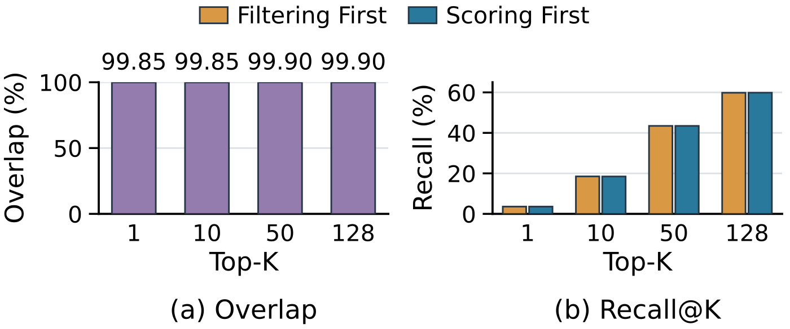
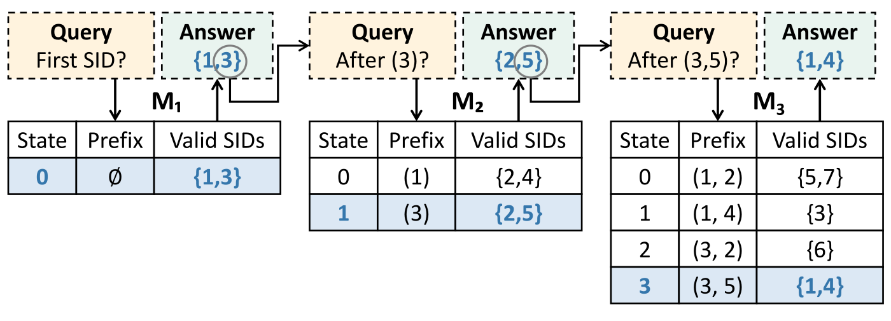
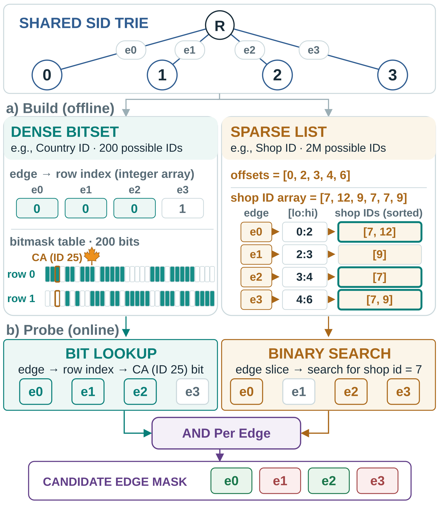
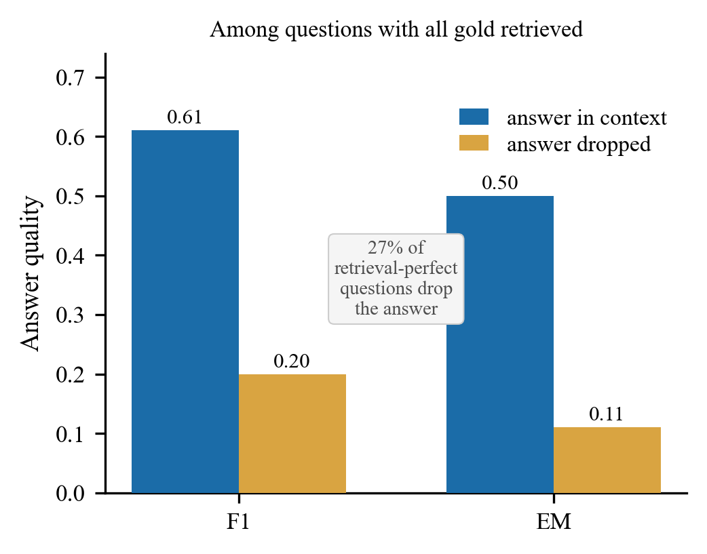

目录 · 9 节
1它到底在解决什么问题？2先过滤会不会改变推荐结果？3整体流程4索引为什么要按解码步切开？5少算分数为什么不等于更快？6这套方案真的更好吗？7我认为它的局限8一个推荐团队可以怎么试9结论做生成式推荐服务的工程团队值得读：它指出约束解码的大部分计算花在注定被丢弃的候选上，并给出了一整套先过滤的系统实现。生成式推荐逐个 token 生成物品编码，每一步都要保证生成的编码对应目录里真实存在的物品。常见做法是先给所有可能的下一个 token 打分，再把无效的过滤掉，但绝大多数组合本来就无效，这些分数都白算了。作者先验证顺序能不能反过来：先过滤再打分，返回的物品和原来重合约 99.9%，推荐质量几乎不变。ZeroGR 围绕这个顺序做了两件事。一是按解码步切开过滤索引，候选少的步用稀疏格式存，候选多的步用稠密格式存，以此省下显存。二是改了 GPU 上的执行方式：给每个前缀固定候选槽位，每一步事先实测选定全量打分还是只算合法 token。正是这一步把少算的分数变成了真实的提速。和代表性基线比，过滤、打分加挑选候选这一段最多快 9.9 倍。
它到底在解决什么问题？
生成式推荐用 beam search 一步一步生成物品的 SID，相近物品的 SID 前几位相同。每一步，模型要对每个 beam 算出下一个 token 的分数。可 SID 的组合空间极大，生产系统里所有可能的组合超过 10 的 16 次方，真正对应物品的只有一千万到一亿个。所以每一步还要过滤：只保留能走到真实物品的 token。
举个示意的例子：目录里只有两件物品的 SID 以 3-5 开头，分别是 3-5-1 和 3-5-4。当某个 beam 已经生成了 3-5，下一步合法的 token 只有 1 和 4 两个。
| 做法（示意） | 第 3 步对这个 beam 算多少个分数 | 最后留下几个 |
|---|---|---|
| 先打分再过滤 | 这一位所有可选的 token（码本），比如 2,048 个 | 2 个 |
| 先过滤再打分 | 只算 1 和 4 两个 | 2 个 |
先打分的做法是一次大矩阵乘法把所有 token 都算一遍，再用掩码把无效的盖掉。越往后的解码步，合法 token 越少，白算的比例越高。
先过滤会不会改变推荐结果？
顺序反过来并不是完全等价的。打分时要做 softmax 归一化：先打分时，分母包括所有 token；先过滤时，分母只有合法 token。如果某个前缀把不少概率分给了无效 token，先过滤会把它的合法候选分数抬得更高，可能改变 beam 里谁留下。
作者在 MovieLens-1M 上训练了一个生成式推荐模型实测。两种顺序返回的物品重合 99.85% 到 99.90%，各个截断位置的 Recall 几乎一样高。原因在于解码的结构：前几步合法 token 还很多，训练好的模型本来就把几乎全部概率放在合法 token 上，去掉无效 token 对分母影响很小；后几步合法 token 很少，但一个候选的总分主要由前面几步决定，这时换顺序很少改变谁被留下。质量不受影响，是先过滤能成立的前提。

整体流程
ZeroGR 由三部分组成：离线构建的过滤索引、在线每一步使用索引的执行引擎，以及模型更新时重建索引的流水线。在线每个解码步分四个阶段：模型输出每个 beam 的隐向量；从索引里读出这个 beam 的合法 token；给合法 token 算分数，候选少的步只算合法 token，候选多的步先全量算再挑出合法的；只在合法 token 上做 log-softmax，把得到的对数概率加到这个 beam 已有的累计对数概率上，再按新的累计值选出下一步的 beam。下面拆开讲。
索引为什么要按解码步切开？
最直接的索引是一棵前缀树。但解码时，第 3 步只会问"长度为 2 的前缀后面能接什么"，从不需要整棵树。所以 ZeroGR 把索引拆成每步一张表。第 3 步的表里，每一行对应一个长度为 2 的前缀，记着它能接哪些 token，以及接上之后在第 4 步表里是第几行。beam 只要带着这个行号往下走，不用回头再查前面的 token。
按步切开后，每张表可以选自己的存法。合法 token 多的步用稠密表，表的列和全量打分输出的顺序正好对上；后几步每个前缀只剩几个 token，用稀疏表。还有一个细节：稀疏表里一个 token 在数组里的位置本身就是它下一步的行号，所以不用另存；最后一步的 token 也不需要下一步行号。
和 STATIC（一种先打分再过滤、把前缀树压平后放在 GPU 上的约束解码方法）相比，ZeroGR 的索引在一个工业搜索数据集上小 59.1%，在另一个工业数据集 Watch 上小 74.5%。在 24 GB 显存的 4090 D 上，STATIC 的索引在后一个数据集上放不下，ZeroGR 能放下，还给模型权重和 KV cache 留出了大部分显存。

少算分数为什么不等于更快？
全量打分是一次规整的大矩阵乘法，GPU 最擅长。只算合法 token 时，每个 beam 要读的权重行数各不相同，工作量变得零碎，处理这些零碎工作的开销可能比省下的计算还多。
论文的对照很直观。在搜索数据集上合法 token 最多的第 2 步（FP32，批大小 1），全量打分要算 2,359,296 个分数，只算合法 token 只要 71,189 个。可朴素实现的"只算合法 token"反而比全量打分慢 5.1 倍，因为它要先把所有 beam 的候选压成一个紧凑列表，还要建一个临时矩阵。ZeroGR 的做法是统一补齐：同一步里每个 beam 分到一样多的候选槽位，个数取这一步合法 token 最多的那个前缀（稠密表就是整个码本）。稀疏表的步，合法 token 从头依次填进槽位；稠密表的步，每个槽位对应码本里的一个 token，和全量打分的输出一一对上。没有合法 token 的槽位分数记为负无穷，不参与挑选。这样一个候选在哪个槽位，只取决于它属于哪个 beam、排第几，和别的 beam 有多少候选无关。过滤、打分和挑选三个阶段都直接读写这些槽位，打分时原地读取权重行，不用压紧列表，也不用临时矩阵。同样的计算量，它比朴素实现快 8.5 倍，也快过全量打分。 Hoot 说

朴素做法：压紧成列表
- beam A / beam B 的合法候选（示意）
- 1 / 3
- 紧凑列表长度
- 1 + 3 = 4
- B 的第 1 个候选在哪
- 第 2 位，要先知道 A 有几个
- 额外工作
- 压紧列表 + 临时矩阵
论文实测：这样只算合法 token，反而比全量打分慢 5.1 倍。
ZeroGR：统一补齐槽位
- 每个 beam 的槽位数
- 3（取候选最多的 B）
- 槽位总数
- 2 × 3 = 6
- B 的第 1 个候选在哪
- B 的第 1 个槽位，不用看 A
- A 多出的 2 个槽位
- 分数记负无穷，不会被选中
过滤、打分、挑选都直接读写这些槽位。同样的计算量，比朴素做法快 8.5 倍。
两个 beam 的候选数是示意。左边是朴素做法：先把候选压成一张紧凑列表，再建临时矩阵。右边是 ZeroGR：每个 beam 分到一样多的槽位，空槽位记负无穷。要记住的是：右边多了空位，但候选在哪个槽位只看它属于哪个 beam、排第几，不用等别的 beam。 出处: 论文 §4 与 Figure 9：朴素的只算合法 token 比全量打分慢 5.1 倍，补齐槽位后比朴素实现快 8.5 倍；beam 的候选数为示意
每一步用全量打分还是只算合法 token，是在上线前定下的。每次模型更新、新版本接流量之前，ZeroGR 用预热请求把每一步的几种做法都实测一遍，留下最快的，一直用到下次更新，解码时不再逐个请求判断。所以选择会随 GPU、精度和批大小变化。在 Watch 数据集上，第 1 步全部 token 合法，第 2 步约 90% 合法，ZeroGR 前几步大多用全量打分，主要在最后一步才改用只算合法 token。
这套方案真的更好吗？
| 数据集与设置 | 结果 |
|---|---|
| 搜索数据集，批大小 32，FP16 | 五步解码共 1.88 毫秒，比不加约束的解码（只作速度参照）快 9.1 倍 |
| 搜索数据集，第 3 到 5 步，FP32，批大小 1 | 每步约 0.08 毫秒，STATIC 约 1.04 毫秒 |
| Watch 数据集，数据中心 GPU | 比 STATIC 快 2.0 到 3.2 倍 |
| 索引重建，搜索数据集 | 0.914 秒，只有 STATIC 用时的 0.36% |
最反直觉的一条是：带约束的 ZeroGR 比不加任何约束的解码还快。不加约束的解码只是速度参照，它生成的编码不一定对应真实物品。它每一步都要给输出层的全部 token 算分数，而 ZeroGR 在后面几步只算几个合法 token。这说明约束用对了地方，是在减少计算，而不是增加开销。在合成数据上，把码本从 2,048 加到 16,384，ZeroGR 在批大小 32 时的延迟一直在 3.1 到 4.5 毫秒之间，成本跟着合法 token 数走，而不是码本大小。在目录规模固定的合成实验里，码本变宽并没有让整体延迟同比例上涨。
索引重建也重要，因为目录和 SID 跟着模型一起更新，新版本上线前必须重建完，而且不能抢正在服务的 GPU。ZeroGR 在 CPU 上分块并行构建，先算好每块在最终索引里的位置，再用两块缓冲区一边生成一边传到 GPU。
我认为它的局限
第一，质量不变的证据主要来自 MovieLens-1M 上的一个模型。工业数据集上的实验只测延迟，不测推荐质量，而大目录、更深 SID 时概率分给无效 token 的比例可能不同。
第二，所有延迟都不含模型本身的推理时间。如果模型前向占了解码大头，9.9 倍的提速放到端到端延迟里会被稀释。
第三，收益和数据的稀疏程度强相关。Watch 数据集前两步几乎全部合法，在 FP16、大批量时 ZeroGR 甚至略慢于不加约束的解码。
一个推荐团队可以怎么试
- 先在自己的服务里量一下：每个解码步合法 token 占码本的比例，以及过滤和打分占整个解码延迟的多少。如果过滤和打分只占解码延迟的一小部分，或者后几步合法 token 仍占码本的大半，就不必动。
- 离线对比两种顺序的结果重合度和 Recall。重合度接近 100% 才继续。
- 先只在最稀疏的最后几步改成只算合法 token，前几步保持全量打分。要注意朴素实现可能反而更慢：论文里先压紧候选列表、再建临时矩阵的做法比全量打分慢 5.1 倍。所以要用固定槽位、原地读权重行这类实现，并逐步实测再定。
- 索引显存吃紧或模型更新窗口紧张时，再做按步切分的索引和流式重建。
结论
最值得带走的一点是：约束解码里的目录约束，可以用来决定算什么，而不只是在算完之后盖掉什么。
| 维度 | 评价 |
|---|---|
| 问题重要性 | 中高。约束解码是生成式推荐上线的固定开销，码本越大越明显 |
| 方法创新性 | 中。先过滤的想法已有先例，贡献在于验证质量和把它做成高效的 GPU 实现 |
| 实验证据 | 中高。延迟和显存实验充分，质量对照只在一个公开数据集上 |
| 工程成本 | 高。需要自定义 CUDA 算子和索引构建流水线 |
| 是否值得尝试 | 值得。码本大、后几步很稀疏的团队，可以先从最后几步只算合法 token 开始 |
读完这篇，你觉得
夜读鸮记下了，谢谢你的反馈。
点一下即可，无需登录；再点一次撤回。只统计匿名次数，不记录你是谁。
相关论文RELATED
 Generative · 2026-11-04Where Beam Search Loses Top-Ranked Items:First-Step Coverage in Generative Recommendation生成式推荐用束搜索逐位生成 SID，想少漏好结果，通常的做法是把每一步的宽度一起调大。这篇论文在 TIGER 的六组完整测试设置里逐个排查：按模型自己的打分本该进前 10、却被剪掉的结果，全都是在第一步就丢掉的。所以更划算的做法是把宽度集中给第一步，后面几步收窄。这样分配后，只用约一半的前缀预算（所有步骤保留的前缀总数），就复现了宽度翻倍的束搜索给出的前 10 名，连顺序都一样，而且不用重训模型。束宽应该花在最容易丢结果的那一步。
Generative · 2026-11-04Where Beam Search Loses Top-Ranked Items:First-Step Coverage in Generative Recommendation生成式推荐用束搜索逐位生成 SID，想少漏好结果，通常的做法是把每一步的宽度一起调大。这篇论文在 TIGER 的六组完整测试设置里逐个排查：按模型自己的打分本该进前 10、却被剪掉的结果，全都是在第一步就丢掉的。所以更划算的做法是把宽度集中给第一步，后面几步收窄。这样分配后，只用约一半的前缀预算（所有步骤保留的前缀总数），就复现了宽度翻倍的束搜索给出的前 10 名，连顺序都一样，而且不用重训模型。束宽应该花在最容易丢结果的那一步。
Generative · 2026-11-11RoutingTrie: Metadata Routing for Constrained Generative Retrieval生成式检索常要带条件，比如只要某家店的商品，而 trie 只能保证生成的 SID 真实存在，管不了店铺、国家这些条件。常见做法是生成完再过滤，可 beam 早被别家店的候选占满，过滤后可能剩不下几个。RoutingTrie 把过滤提前到每一步 beam 选择之前：给 SID trie 的每条边记下它下面出现过哪些店铺、国家等取值，解码时先屏蔽到不了目标取值的分支。取值少的字段存位图，店铺 ID 这种取值上百万的字段存排序列表。用生产系统回放历史购买记录，按店铺过滤时 Hit@100 从 67.5% 升到 96.1%，请求延迟只多 1.1 毫秒。模型打分没变，涨幅来自 beam 不再被白占。做带过滤召回的人可以把元数据条件放进解码过程，模型不用改，只是 beam 有限时仍不能保证一个不漏。 Generative · 2026-11-04Utility-Aware Generative Recommendation: Utility-Enriched Semantic Codes and Utility-Guided Decoding快手这篇论文在生成式推荐里两处以前只看内容和概率的地方加入了视频价值：SID 最后一个 token 里留出 3 个比特，记下视频的价值档位：用 7 个边界把一项价值统计（如历史点击率）从低到高切成 8 档；束搜索每一步，一个小模块预测候选的观看、点赞等行为，各项预测归一化后加权求和成价值分，乘上系数加到生成概率的对数上，再按总分剪枝。原因是常见做法只按内容编 SID，内容相近的视频不管常被看完还是很少被看完，编码几乎一样。束搜索又只按生成概率剪枝，高价值候选可能在中间某个 token 就被剪掉，重排也救不回来。已在快手全量上线，视频观看时长提升 0.206%。价值信号放在剪枝这一步用，比只在生成完之后重排更有效。
Generative · 2026-11-04Utility-Aware Generative Recommendation: Utility-Enriched Semantic Codes and Utility-Guided Decoding快手这篇论文在生成式推荐里两处以前只看内容和概率的地方加入了视频价值：SID 最后一个 token 里留出 3 个比特，记下视频的价值档位：用 7 个边界把一项价值统计（如历史点击率）从低到高切成 8 档；束搜索每一步，一个小模块预测候选的观看、点赞等行为，各项预测归一化后加权求和成价值分，乘上系数加到生成概率的对数上，再按总分剪枝。原因是常见做法只按内容编 SID，内容相近的视频不管常被看完还是很少被看完，编码几乎一样。束搜索又只按生成概率剪枝，高价值候选可能在中间某个 token 就被剪掉，重排也救不回来。已在快手全量上线，视频观看时长提升 0.206%。价值信号放在剪枝这一步用，比只在生成完之后重排更有效。
Generative · 2026-08-07Recall Is Not Enough: A Reader-Context Diagnostic for Budget-Constrained Retrieval-Augmented GenerationRAG 在上下文预算很紧时，召回率高不代表模型读到了答案：HotpotQA 上检索已找全标准文档的题里，27% 在打包裁剪时把答案丢了，这些题的精确匹配率只有 0.11。作者建议直接检查标准答案有没有进入最终上下文，并按这个目标做了子模打包器，稳定胜过按相关度截断和 LLMLingua-2 压缩，但对手调启发式基本打平。
讨论
欢迎补充实验细节、复现经验或不同看法。需 GitHub 登录。
正在加载讨论…